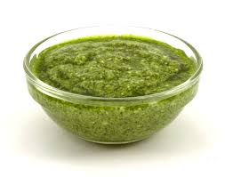

Home
Pesto

Description
Pesto is a traditional Italian uncooked sauce made from fresh basil, pine nuts, Parmesan cheese, garlic, and olive oil.
It is traditionally prepared using a mortar and pestle, but a blender or food processor can also be used.
It is perfect for pasta, bruschetta, or cold dishes.
Ingredients
- 2 cups fresh basil leaves
- 1/2 cup grated Parmesan cheese
- 1/3 cup pine nuts
- 2 cloves garlic
- 1/2 cup extra virgin olive oil
- Salt to taste
Steps
- Wash and thoroughly dry the basil leaves.
- Add basil, pine nuts, and garlic to a blender or food processor.
- Blend until roughly combined.
- Add the Parmesan and blend briefly.
- Slowly pour in the olive oil while blending until smooth.
- Adjust salt to taste.
- Use immediately or store in the refrigerator.